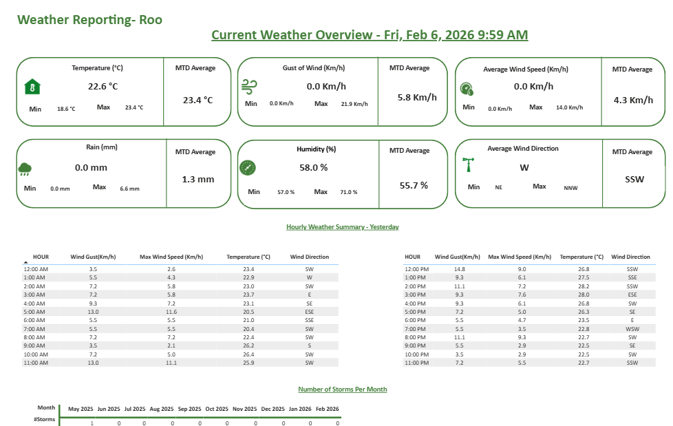

Weather + Production Intelligence (Aquaculture Decision Support)
Victory Farms • Forecast-driven planning

Situation: Weather variability influenced growth, feeding efficiency, and mortality, yet planning decisions were not consistently guided by quantified weather signals.
Task: Combine weather data with production data to identify drivers and support proactive decision-making.
Action: Modeled weather + production datasets, validated definitions, analyzed relationships (temperature/rainfall vs. outcomes), and built interactive Power BI dashboards for trend exploration.
Result: Delivered insight into how environmental conditions affect productivity—supporting proactive planning, risk reduction, and more consistent operational performance.
Tech Stack
- Power BI (DAX, modeling, dashboards)
- SQL (extraction and transformations)
- Excel (quality checks and analysis support)